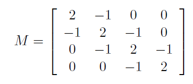

1. Useful Introduction to Python, GitHub, and LaTex¶
Questions that you may be asking:
What is Python?
Why should I use it?
Is it venemous?
Why am I talking to myself?
In this chapter, you are going to learn the answers to some of these questions and develop some basic skills. These skills will be useful in later chapters and will form a springboard so that you can dive into the ocean that is Computational Physics. The first thing that you may need is motivation, which lies in the history of scientific computing.
1.1. A History¶
A computer is a machine that can carryout sequences of arithmetic or logical operations. It requires instructions in a specific order (i.e., syntax), and space to hold intermediate/final results (i.e., memory). Prior to the 20th Century, a computer was a mechanical device that allowed users to perform arithmetic calculations quickly. An abacus is one such device:
|
|---|
The Chinese suanpan. The number represented on this abacus is 6,302,715,408. (wikipedia:abacus) |

The principle of the modern computer was proposed by Alan Turing (1936) in his paper On Computable Numbers. Turing proposed a “Universal Computing machine” that is capable of computing anything that is computable by executing instructions (program) stored on tape, allowing the machine to be programmable. The fundamental concept of Turing’s design is the stored program, where all the instructions for computing are stored in memory. Von Neumann acknowledged that the central concept of the modern computer was due to this paper.
Colossus was the world’s first electronic digital programmable computer, where it used a large number of valves (vacuum tubes). It had paper-tape input and was capable of being configured to perform a variety of boolean logical operations on its data. The ENIAC (Electronic Numerical Integrator and Computer) was the first electronic programmable computer built in the United States. Like the Colossus, a “program” on the ENIAC was defined by the states of its patch cables and switches. Once a program was written, it had to be mechanically set into the machine with the manual resetting of plugs and switches.
|
|---|
ENIAC was the first electronic device in the U.S. and performed ballistics trajectory calculations for the United States Army. (wikipedia:computer) |

Along with military applications, computers became the catalyst for many scientific and engineering breakthroughs. In the 1950s, IBM developed the programming language FORTRAN (Formula Translation) as a general-purpose, compiled imperative programming language that is especially suited to numeric computation and scientific computing. Many scientific programs were developed in FORTRAN and are still in use today in computationally intensive areas such as numerical weather prediction, finite element analysis, computational fluid dynamics, geophysics, computational physics, crystallography and computational chemistry.
Before the development of disk files, text editors and terminals, programs were most often entered on a keypunch keyboard onto 80-column punched cards, one line to a card. The resulting deck of cards would be fed into a card reader to be compiled. Punched card codes included no lower-case letters or many special characters, and special versions of the IBM 026 keypunch were offered that would correctly print the re-purposed special characters used in FORTRAN. Reflecting punched card input practice, FORTRAN programs were originally written in a fixed-column format, with the first 72 columns read into twelve 36-bit words.
|
|---|
FORTRAN code on a punched card, showing the specialized uses of columns 1–5, 6 and 73–80. (wikipedia:fortran) |

1.2. Why Python?¶
Fast-forwarding from punchcards to the modern era, other computer languages (C, C++, Java) were developed to improve upon FORTRAN in terms of their usage (i.e., easier to code) and compilation speed. FORTRAN has also changed over many versions that migrated it from punchcards to completely digital files. The programming language C rivals FORTRAN for speed and has become the backbone of modern computing. Back to Python. What is it?
Python is a scripting language, which means it takes commands in a more human-like language and translates those commands into machine code (zeros and ones). The Python interpreter does this one line at a time, but its translation into machine code is less efficient than C or FORTRAN. For applications where speed is key, Python is used as an interface while portions of the code are passed into the speedier languages. Alternatively, one can develop their Python code using C extensions for Python (or Cython).
Scientists are quickly adopting Python within a range of fields because it is open-source (i.e., free) and much easier for students to learn. Especially if you have any prior experience in programming, where Python strips away many of the quirks from legacy languages. Due to the simplified structure of Python programs, you can easily begin programming and get to your results.
1.3. Python Basics¶
1.3.1. Create a Jupyter Notebook¶
To create a Jupyter notebook in Microsoft VS Code: open the command palette (Windows: Ctrl + Shift + P, iOS: Command + Shift + P) and select the command “Jupyter: Create New Blank Notebook”.
Python programs include 3 elements: 1) import statements/libraries, 2) custom functions, and 3) regular statements. Although this document has flowing text, most Python programs are written to be as short as possible. For these examples, we are using an interactive Python mode, where code blocks are designated with
In [ ]:
for input. These codeblocks can be run and re-run with tweaks, but you need to watch out for dependencies (i.e., assumptions that some other code exists in memory). Let’s start by importing a commonly used modules numpy and matplotlib
import numpy as np
import matplotlib.pyplot as plt
These import statements will allow us to use functions with the respective modules. The numpy module was developed to make managing data structures easier, while the matplotlib library introduces functions from the Matlab Plotting Library so that we can visualize our results. To produce a graph, let’s first generate some data:
x = np.arange(1,5,0.5)
y = 3*x + 2
The first line uses the ‘arange’ function from numpy, where we use ‘np’ as a shortcut label. The ‘arange’ function takes in up to 3 values as input: starting value, stopping value, and step size to generate a numpy array with an interated sequence:
x = np.array([1. , 1.5, 2. , 2.5, 3. , 3.5, 4. , 4.5])
Note that the generated values are floats (i.e., real numbers) and the final value of the array is 4.5 and not 5.0. Python generators typically exclude the end point. If we wanted to use integers (i.e., whole numbers) instead, then we could have used the ‘range’ function from pure Python without refferring to the numpy module and excluded the step size as input (e.g., range(0,5)).
The second line generates another numpy array using the values stored in ‘x’. More precisely, it makes a temporary copy of ‘x’, where it performs a multiplication by 3 and addition of 2 to each element of the copied array. Finally, the temporary copied array is stored as a variable called ‘y’.
y = np.array([ 5. , 6.5, 8. , 9.5, 11. , 12.5, 14. , 15.5])
Now, we are going to make a plot of the data that we generated. To create a canvas in matplotlib, we start with the figure function and store it in a container called ‘fig’. The suptitle function uses a string (i.e., array of characters) as input and sets the keyword argument fontsize equal to 16 pt font. We also introduce a container ‘ax’ that holds the axes for the canvas through the add_subplot function that takes a three digit number (row column index) as input.
fig = plt.figure()
fig.suptitle('My first graph', fontsize=16)
ax = fig.add_subplot(111)
ax.plot(x,y,'k.',ms=18)
[<matplotlib.lines.Line2D at 0x14a0e7a28e0>]

To plot our generated data, we simply used the plot function on the axes (the Axes class inherits the plot function from the matplotlib module). The plot function used the x and y arrays to generate the points, but we also had to tell it that we wanted black points (‘k.’) with a markersize (ms) equal to 18 pts.
However, we may want to make a lot of plots and do not want to copy/paste a bunch of times. To reuse our commands, we define a custom function ‘create_plot’ that takes the parameters we may want to vary as input.
def create_plot(x,y,color,marker,ms):
fig = plt.figure()
fig.suptitle('My first graph', fontsize=16)
ax = fig.add_subplot(111)
ax.plot(x,y,marker=marker,color=color,ms=18,lw=0)
Notice that Python uses a tab to delineate what should be included in the function. Now let’s change the color to blue (‘b’), the marker to squares (‘s’) and the markersize to 12 points.
create_plot(x,y,'b','s',12)

We can even change the x,y values to something more complicated.
x = np.arange(0,2*np.pi,0.5)
y = 3*np.sin(x+1)-2
create_plot(x,y,'r','^',1)

There are many options within matplotlib, where you will find some more useful than others over time. If in doubt, you can always check the matplotlib gallery (https://matplotlib.org/stable/gallery/index.html) or stackexchange (https://stackexchange.com/). It is likely that someone has already run into your problem/customization and other people have provided a ‘possible’ solution (not all solutions are good!). The last bit of customization for this section is to:
add axis labels
ax.set_xlabel(*string,fontsize=22) or ax.set_ylabel(*string,fontsize=22)
modify tick marks
ax.tick_params(axis=’both’, direction=’out’,length = 12.0, width = 8.0)
modify tick labels
using
$opens the latex interpreter for custom symbols (e.g.,$\pi$= \(\pi\))ax.set_xticklabels([‘0’,’\(\pi\)/2’,’\(\pi\)’,’\(3\pi/2\)’,’2\(\pi\)’])
set sensible axis limits
ax.set_xlim(0,2*np.pi)
add a legend
add the keyword ‘label’ to the plot command and set equal to a string
ax.legend(loc=’upper right’,fonstize=20)
fig = plt.figure()
fig.suptitle('My first graph', fontsize=16)
ax = fig.add_subplot(111)
ax.plot(x,y,marker='*',color='orange',ms=18,lw=0,label='SHO')
ax.set_xlabel("Angle (rad.)",fontsize=22)
ax.set_ylabel("Amplitude (ft/s)",fontsize=22)
ax.tick_params(axis='both', direction='out',length = 12.0, width = 8.0)
ax.set_xlim(0,2*np.pi)
ax.set_xticks([0,np.pi/2,np.pi,3.*np.pi/2.,2*np.pi])
ax.set_xticklabels(['0','$\pi$/2','$\pi$','$3\pi/2$','2$\pi$'])
ax.legend(loc='upper center',fontsize=20)
<matplotlib.legend.Legend at 0x14a0e9a6d30>
Figures can be saved to file using the savefig function, which takes the filename as an argument. Additional keyword arguments (kwargs) can be applied that alter the display of the figure (e.g., dpi = 300 sets the dots per inch to 300).
fig.savefig("SHO.png",bbox_inches='tight',dpi=300)
1.3.2. Modules to solve problems¶
There are many modules within modules, where object-oriented notation is used to access them. For example, you can generate a random number between 0–1 using the rand() function within the random module within the numpy module (i.e., np.random.rand()).
np.random.rand()
0.48560347494007683
Another extremely useful library for physicists is the linear algebra package in numpy. This package provides very fast routines for calculating anything having to do with matrices: eigenvalues, eigenvectors, solutions of systems of linear equations, and so on.
Example 1: In electronics, Kirchhoff’s laws are used to solve for the currents through components in circuit networks. Applying these laws gives us systems of linear equations, which can then be expressed as matrix equations, such as:

A = np.matrix([[-13,2,4],[2,-11,6],[4,6,-15]]) #matrix is an array of an array
B = np.array([5,-10,5])
np.linalg.solve(A,B)
array([-0.28624535, 0.81040892, -0.08550186])
1.3.3. Reading and writing data from a file¶
Python allows for many forms of input. There are commands to request user input manually via the terminal window, where this can be a direct request or by command line arguments. For computational physics, it is likely that you want to know how the output of a program changes with slightly different inputs or to visualize a data set. At this point manual input is impractical and cumbersome. In this section, you will learn how to read and write to data files so that you can save your work for later or prepare it for others to use. Files are created using the open() function that takes a filename and a mode as input. Here’s a table detailing the different modes available to the open() function.
Character |
Meaning |
|---|---|
‘r’ |
reading from a file; returns error if not found |
‘w’ |
writing to a file; creates a new file/overwrites existing file) |
‘x’ |
open for exclusive creation; failing if the file already exists |
‘a’ |
open for writing; appending to the end of the file if it exists |
‘b’ |
binary mode |
‘t’ |
text mode (default) |
‘+’ |
open for updating (reading and writing) |
Let’s generate some data using the equation for a simple pendulum:
\(\ddot{\theta} = \sqrt{\frac{g}{l}} \theta\),
which has the solution
\(\theta(t) = \theta_{max} \sin \left(\sqrt{\frac{g}{l}} t \right)\),
where \(g\) represents the acceleration due to gravity, \(l\) is the length, and \(t\) is the time. Now let’s define some variables.
g = 9.81 #m/s^2 Earth gravity near the surface
l = 1 #meter long string
t = np.arange(0,10.5,0.01) #10 seconds with 0.5 sec increments
theta_max = 45 #maximum amplitude in degrees
fname = "Simple_Pendulum.txt"
theta = theta_max*np.sin(np.sqrt(g/l)*t)
out = open(fname,'w') #create a text file and open it for writing
out.write("#time (s), theta (deg)\n") #write a header
for i in range(0,len(t)):
out.write("%1.2f, %1.3f\n" % (t[i],theta[i]))
out.close()
The data is written to “Simple_Pendulum.txt”, which exists in the same directory as this Jupyter notebook. In practice, you may want to include an absolute path in the filename. Using our code from before, we will read the data from the file. Notice that we formatted the header with a # symbol and the lines are comma delimited. We are going to take advantage of this using the ‘genfromtxt’ function from numpy.
x,y = np.genfromtxt("Simple_Pendulum.txt",delimiter=',',comments='#',unpack=True)
fig = plt.figure()
fig.suptitle('Simple Pendulum', fontsize=16)
ax = fig.add_subplot(111)
ax.plot(x,y,'r-',lw=3)
ax.set_xlabel("Time (s)",fontsize=22)
ax.set_ylabel("Amplitude (deg)",fontsize=22)
ax.tick_params(axis='both', direction='out',length = 12.0, width = 8.0)
ax.set_xlim(0,10)
ax.set_xticks(np.arange(0,12,2))
[<matplotlib.axis.XTick at 0x2290755bf10>,
<matplotlib.axis.XTick at 0x2290755bee0>,
<matplotlib.axis.XTick at 0x2290756fa60>,
<matplotlib.axis.XTick at 0x2290756cc40>,
<matplotlib.axis.XTick at 0x2290758e190>,
<matplotlib.axis.XTick at 0x2290758e6a0>]

1.4. GitHub¶
GitHub is a platform used by many disciplines to make code easier to develop, track, store, and share. The platform provides a series of guides that introduce new users through common practices on GitHub. In this section, we will focus on the Hello World guide. Throughout the course, you will develop scripts to perform different tasks and a good way to organize your work is through a GitHub repository. Repositories are free to create (as long as they are < 50 MB) and can serve as a useful place to backup your code. To start this guide, you will need to have a GitHub.com account already created.
1.4.1. Create a repository (repo)¶
A repository (or repo) can contain any kind of code (python, C++, Fortran, etc), spreadsheets, data files, Jupyter notebooks, and most types of files that you can think of. To create a repository:
In the upper right corner, click + and then select New Repository.
Name your repo
hello-worldfor this exercise.Adding a short description is helpful for you (and others) to get a quick idea what the repo contains.
Public repos can be seen by anyone on the internet. Select this option once your repo is ready for the world to see. Private repos allow the creator more control about who is able to view the repo, where users are allowed access one-by-one.
Select Initialize this repository with a README. Since your repos will likely be private, there is no need to add a license. A license tells others what they may or may not do with your public work. Academic researchers use a Creative Commons (CC) or MIT License that allow for pretty broad usage, where scientists within industry are more selective.
Click Create repository.
1.4.2. Create a Branch¶
Branching is the way to work on experimental parts of your repo. By default your repo has a new branch named main, which is what each branch eventually converges to. To create a new branch:
Go to your repo
hello-worldClick the drop down that says branch:main.
Type a branch name,
readme-edits, into the new branch text box.Select the blue Create branch box.
Now you have two branches, main and readme-edits. These two branches are identical right now, but the changes you make to the readme-edits branch will not directly affect the main branch.
1.4.3. Make and commit changes¶
After creating your readme-edits branch, you should now be on the code-view for that branch. Let’s make some edits and see what happens. Saved changes on GitHub are called commits. Each commit also contains a description explaining why a particular change was made. This is particurly useful for developing code over large periods of time or within groups. Let’s make some changes to the README.md file and commit those to the repo:
Click the README.md file.
Click the pencil icon in the upper right corner to edit.
In the editor, write a bit about yourself. What are your research interests?
Write a commite message that describes your changes (e.g., “I’m super awesome because I can make changes to my very own GitHub repo!”)
Click the Commit changes button.
The changes are now saved to the readme-edits branch, so now this branch is different than the main branch*.
1.4.4. Open a Pull Request¶
A pull request is a way for you (and others) to suggest changes to the main branch. Since you made changes to the readme-edits branch, you can now issue a pull request. A pull request will show the differences between both branches. The changes, addition, and subtraction are shown in green and red. In this process, you can also use the @mention system with other GitHub users to have discussions about the pull request and receive feedback. Now we’ll open a pull request so that you can see how to review changes (although you may not do this as often for your own repos).
Click the Pull Request tab, then click the green New pull request button.
In the Example Comparisons box, select the
readme-editsbranch to compare withmain.Look over the changes between branches and make sure they are what you want. Then click the green Create Pull Request button.
Give your pull request a title and write a brief description of your changes. Logging the changes in your edits will make it easier to diagnose problems later.
Click Create pull request!
1.4.5. Merge your Pull Request¶
In the previous 2 sections, you made a new branch of hello-world, edited the branch, and submitted a pull request. The final step is to bring the changes to the main branch. To merge your readme-edits branch into main:
Click the green Marge pull request button to merge the changes into
main.Click Confirm merge.
Delete the
readme-editsbranch, since its changes have been incorporated with the Delete branch button in the purple box.
1.4.6. GitHub Desktop¶
The above guide can be used to create a repository through the web interface of GitHub. When working with your own repos, it is a little easier to use GitHub Desktop, which is a desktop application that simplifies pushing changes to the main branch. This requires a software install, which can be found here. After installing the software, your can:
Clone your repository to your local path (File –> Clone repository).
Open your repo from your local path and edit your files.
After saving your files in the local path, the changes will appear in GitHub Desktop (simliar to a pull request).
Add a description of the changes and click commit to the main branch (blue button)
Click the Push origin button (update all your changes back to the web version of GitHub)
1.5. LaTex (Preparing your work)¶
In the past, scientists had to learn two skills: scientific inquiry and typesetting. However, mathematicians developed a typesetting software, LaTex, that was more programattic, which made it easier to typeset equations within a document. In this course, you will need to communicate your results to others (especially your instructor), where you will use LaTex. To make it easier, we will use the online platform Overleaf. Similar to the guide for GitHub, it is assumed that you have successfully created an Overleaf account. Note that Overleaf provides its own guides that can be found here.
1.5.1. Creating a project¶
Creating a project in Overleaf can be accomplished in two ways: 1) start a project from scratch or 2) start a project from a template. To start a project from scratch:
Click the green New Project button
Select Blank Project
Name your project
Click Create and then the editor will open
To start a project from a template:
Click the green New Project button
Select Academic Journal from the Templates
Find the RevTex tag at the bottom (collection of green tags) and Click it
Select the RevTex 4.2 template from the American Physical Society
When preparing your class assignments, you can build your project from scratch so that you can learn more about the LaTex environment. To submit each of your projects, you will need to build from the RevTex template because it will import the default style for a Journal like Physical Review.
1.5.2. Your 1st Document¶
Open the blank project that you created in the previous section. In this project, we will create a simple working example (look here). A LaTex document contains some front matter, a body, and some back matter. The front matter tells the LaTex compiler what kind of document you are trying to create, how should the document be formatted globally. The body will have the text, figures, and tables in a manner similar to most word processors. The back matter will tell the LaTex compiler how to format references or setup an Appendix.
Here’s a simple working example:
\documentclass{article}
\begin{document}
First document. This is a simple example, with no extra parameters or packages included.
\end{document}
This example will create an article document, adds the text, and compiles it as a pdf file in the right window.
1.5.3. The Front Matter¶
The front matter is everything before the >\begin{document} line. Here, we will replace the \documentclass{article} with the following:
\documentclass[12pt, letterpaper]{article}
\usepackage[margin=1.0in]{geometry}
\usepackage[utf8]{inputenc}
\title{First document}
\author{Your Name \thanks{funded by the Overleaf team}}
\date{\today}
Here’s an explanation of what we just added:
\documentclass[12pt, letterpaper]{article}
This defines the type of document with some additional parameters inside brackets that are comma-separated can be passed to the command. The extra parameters set the font size (12pt) and the paper size (letterpaper). Note that Overleaf uses a European LaTeX distribution, which produces documents in A4 size by default, so letterpaper is important. Another important parameter that can be passed to the \documentclass command is twocolumn if you want your text in a two-column format and twoside for two-side paper sheet printing.
\usepackage[margin=1.0in]{geometry}
This defines the page margins. Everything you submit should have 1 inch margins. More detail about paper size, orientation, and margins can be found here
\usepackage[utf8]{inputenc}
This is the encoding for the document to allow special characters beyond ASCII to be used in the text. It can be omitted or changed to another encoding but utf-8 is recommended.
The next three lines are self-descriptive. But you will need the \maketitle after the \begin{document} for those items to appear.
1.5.4. The Body¶
The body is similar to what you would find in a normal word processor. The first element to add to the body is the abstract. An abstract informs the reader what will follow in the rest of the document. For your class projects, this will be a <250 word summary of your work. In your class assignments, you can write a summary of what you learned so that when future you comes back to it, it will hopefully make sense. To create an abstract:
\begin{abstract}
This is a simple paragraph at the beginning of the document. A brief introduction to the main subject.
\end{abstract}
you must create an abstract environment. Environments (e.g., abstract, figure, table, equation) always have a \begin and an \end statement to tell the LaTex compiler that it needs to do something different here and for how long.
There are other elements that in the body that don’t need an environment because they are self explanatory to the compiler when to stop. For example, you can organize the body using sections, subsections, subsubsections, etc. Although an environment is not required, you do need a \ to tell the compiler that it isn’t really text either.
\section{Introduction}
\section{Methods}
\subsection{Newton’s 1st Law}
\subsubsection{Einstein’s Theory of General Relativity}
\section{Results}
In the above examples:
The first section is the Introduction and it will be enumerated starting from 1. The LaTex compiler will know when the Introduction ends when it encounters the next \section command.
The second section called Methods (enumerated with 2) has a subsection called Newton’s 1st Law. Subsections are then enumerated with a “.#”, where the above subsection is 2.1. Subsubsections will gain an additional “.#” so that it will numbered 2.1.1.
The third section (enumerated with 3) tells the compiler to go back to the previous level in the tree.
Between section commands, this is where the main text will appear. In contrast to a word processor (like Word), LaTex allows for inline commands. The most common inline commands are:
Enter math mode with $ signs. Suppose you need the greek letter \(\alpha\), then you can easily add it to your text by placing the \alpha between $ $. This is less cumbersome than having to define a macro in Word. Anything that you could do in an equation, can be done in math mode (e.g., \frac{1}{2}x^2 in between $ signs appears as \(\frac{1}{2}x^2\))
Cite a reference. This will be explained more later.
Add a comment to the writer using %. Everything on a line that comes after % will not appear in the pdf document, but can serve as a note for later.
You can add text formatting for bold, italics, or \(\texttt{texttype}\) using: \textbf, \textit, or \texttt.
Figures and tables are created using an environment (recall that this means begin and end statements). For many of the extra features for figures, you will need to add \usepackage{graphicx} to the front matter. Figures and tables have similar structures as you can see in these basic examples:
\begin{figure}[!h]
\centering
\includegraphics[width=\linewidth]{filename.png}
\caption{This is the figure caption, which describes basic aspects of the figure to the reader. \label{fig:Fig1}}
\end{figure}
and
\begin{table}[!h]
\centering
\begin{tabular}{c|c|c}
\hline
cell11 & cell12 & cell13 \ \
cell21 & cell22 & cell23 \ \
cell31 & cell32 & cell33
\end{tabular}
caption{This is a table caption, which describes the basic apsects of the table or gives the table a title. \label{tab:Tab1}}
\end{table}
The figure and table environment have a [] after the begin statement, where positioning arguments are placed (e.g., !=override default, h=here, t=top of page, b=bottom of page). This is followed by \centering, which tells the LaTeX compiler to place the figure/table in the center of the page (<——center——->). The figure environment relies on the \includegraphics command from the graphicx package, which this has a [] for arguments that tell the LaTeX compiler how to scale the figure. In the above example, the figure is scaled so that the width of the figure spans an entire line. The {} after \includegraphics holds the filename of the image (e.g., filename.png), where LaTex can handle many filetypes (e.g., png, jpg, and pdf are the most common). The table environment is different in that it holds tabular environment within table environment. The tabular environment has arguments {} that tell the LateX compiler:
the number of columns (implicitly),
the alignment within columns (explicitly), and
the borders between columns.
The columns can be left (l), center (c), or (r) aligned, where the total number of these characters indicates the number of columns (3l’s = 3 columns left aligned). The \hline command draws a horizontal line that spans the width of the table. The data within the table is separated using the & symbol and a row is terminated with \\. The last row doesn’t need to be terminated with \\ and the \end{tabular} must follow on the next line.
Both figures and tables use the caption environment to hold the description and a label environment so that the figure/table can be dynamically referenced in the text (using \ref{fig:Fig1} or \ref{tab:Tab1}). The beauty of LaTex is that the referencing system keeps track of the figure and table numbering so that if the order of tables are switched, then the numbering is updated with the next compilation. Finally, both figures and tables require an \end statement.
The LaTex compiler will abort or crash if a given environment does not have matching {} or begin/end statements. This is usually indicated in the compilation log (upper right button View Logs).
1.5.5. The Back Matter¶
The back matter contains supplementary information to the body (e.g., acknowledgments, references, appendices). The acknowledgments (note the spelling) is an environment so it needs a \begin{acknowledgments} and an \end{ackowledgments}, where this section is where you would thank particular individuals/institutions that aided in the completion of the project (e.g., converstations, resources, proofing).
An appendix is started with the \appendix command, which behaves much like the body but includes supplementary material (e.g., a derivation of an equation, how a new method was verified) and it’s labeled with letters (A,B,C,…). For you, this is where you can put the code that you generate using the \verbatim environment. Addtional guides on how to include code in Latex can be found here.
In addition to the ease of generating equations, LaTex is preferred because it makes referencing easier too with BibTex. At the end of your document, references are included by telling LaTex the referencing style (e.g., apsrev4-2.bst for Physical Review) and a database of references (e.g., references.bib) through supplemental files. You must include the following for the references:
\bibliographystyle{style_filename.bst}
\bibliography{reference_filename.bib}
The reference database (*.bib file) will contain entries like the following:
@ARTICLE{Berman1983,
author = "Berman, Jr., G. P. and Izrailev, Jr., F. M.",
title = "Stability of nonlinear modes",
journal = "Physica D",
volume = "88",
pages = "445",
year = "1983",
}
where the Berman1983 is a label used for the inline citation command within the body (e.g., \cite{Berman1983}). The quotation marks for each field tell BibTex not to change the formatting (i.e., captialization). There are different types of environments that correspond to different references (e.g., ARTICLE, BOOK, INPROCEEDINGS, etc.). Remember that environments require an opening { and closing }.
The inline citations have more variations within Astronomy because that community uses the author (year) referencing style, while Physical review uses a [number] style. In this course, you will use the latter.
1.6. Problems¶
Complete the following problems in a Jupyter notebook, where you will save your results as an external file (*.png).
Create a LaTex document with:
an abstract summary
sections for each problem that state the problem, summarize what you did, and display the results
include a reference for each solution (this can be textbooks)
Graph both of the following functions on a single figure, with a usefully sized scale.
a. \(x^4e^{-2x}\)
b. \([x^2e^{-x}\sin(x^2)]^2\)
The file Ba137.txt contains two columns. The first is counts from a Geiger counter, and the second is time in seconds.
a. Make a useful graph of this data.
b. If this data follows an exponential curve, then plotting the natural log of the data (or plotting the raw data on a logrithmic scale) will result in a straight line. Determine whether this is the case, and explain your conclusion with an appropriate graph.
The data in the file Ba137.txt is actual data from a radioactive decay experiment; the first column is the number of decays \(N\), the second is the time \(t\) in seconds. We’d like to know the half-life \(t_{1/2}\) of \(^{137}\)Ba. It should follow the decay equation \(N = N_oe^{-\lambda t}\) where \(\lambda = \log(2)/\log(t_{1/2})\). Using the techniques you’ve learned in this notebook, load the data from file Ba137.txt into appropriately-named variables. Experiment with different values of \(N_o\) and \(\lambda\) to create a plot of the resulting equation on top of the data. What is your best estimate for \(t_{1/2}\)?
The normal modes and angular frequencies of those modes for a linear system of four coupled oscillators of mass m, separated by springs of equal strength k, are given by the eigenvectors and eigenvalues of M, shown below. Find the eigenfrequencies (Try linalg.eig from numpy).

Create a single plot that shows separate graphs of position, velocity, and acceleration for an object in free-fall. Your plot should have a single horizontal time axis and separate stacked graphs showing position, velocity, and acceleration each on their own vertical axis. The online matplotlib gallery will probably be helpful! Print the graph, with your name in the title.